Project Type
Personal
Timeline
Apr – Jun 2025
Team
3 Designers
Product Designer (Me)
Tools
Figma
ChatGPT
Miro
What I did
- Led research across pollen exposure, mobility, and urban navigation patterns.
- Designed route guidance and map visualizations that make invisible allergens readable.
- Prototyped and tested core flows across 3 rounds of usability studies.
Overview
Navigating the city with pollen-aware guidance
Built for the one billion people who face pollen allergies every year. PollenNav turns vague city-wide forecasts into street-level, allergen-specific guidance so users can plan routes that reduce their exposure in real time.
Recognition
Four design awards across branding, information, and product UX
- iF Winner, Branding & Communication Design 2026 View ↗
- Red Dot Winner, Branding & Communication Design 2025 View ↗
- NYPDA Silver Winner, Product UX 2025 View ↗
- EPDA Winner, Information & Data Design 2025 View ↗
Problem
Meet Maya. Spring is stunning, until her immune system sounds the alarm.
Pollen allergies are seasonal reactions to airborne allergens, causing itchy eyes, congestion, sneezing, and coughing that can disrupt sleep, worsen asthma, and hinder daily activities. A billion people fight pollen every year.

Allergy triggers vary by person, region, and time
Different pollens peak in different states, and local climate shifts when allergy seasons begin. Grass, flower, tree, and ragweed pollens each follow distinct seasonal and geographic patterns across the country.
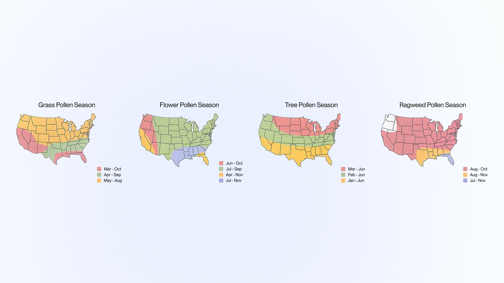
Research
Existing apps miss street-level triggers
Most pollen apps rely on city averages, missing street-level triggers and actionable guidance. I analyzed existing tools to understand where they fall short and why users still feel blindsided by their symptoms.
From 20 global interviews came one clear plea
"Give me allergen-specific guidance for my own street." Users across the US and China shared the same frustration: general warnings don't match their lived experience. They wanted granular, personal data they could actually act on.
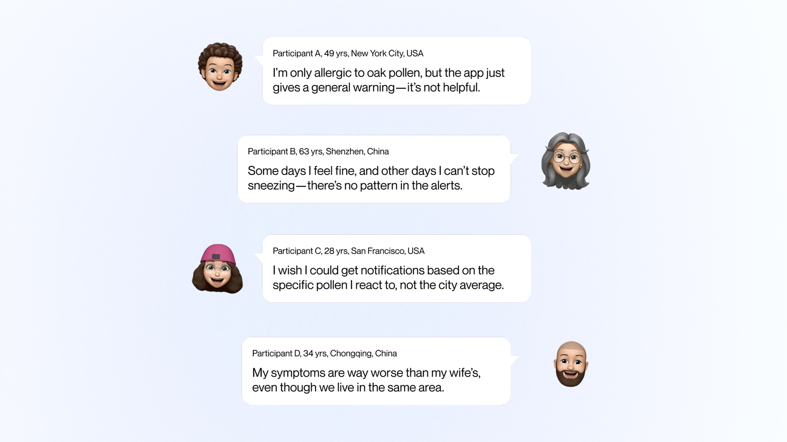
Goals and challenges
Navigation, not another symptom tracker
We weren't building another symptom tracker. We designed street-level navigation that helps people plan safer routes and confidently step outside.
Our starting playbook
We combined National Weather Service data for accuracy with Waze-style community reports for freshness, creating a hybrid data model that captures both official forecasts and real-time, on-the-ground conditions.
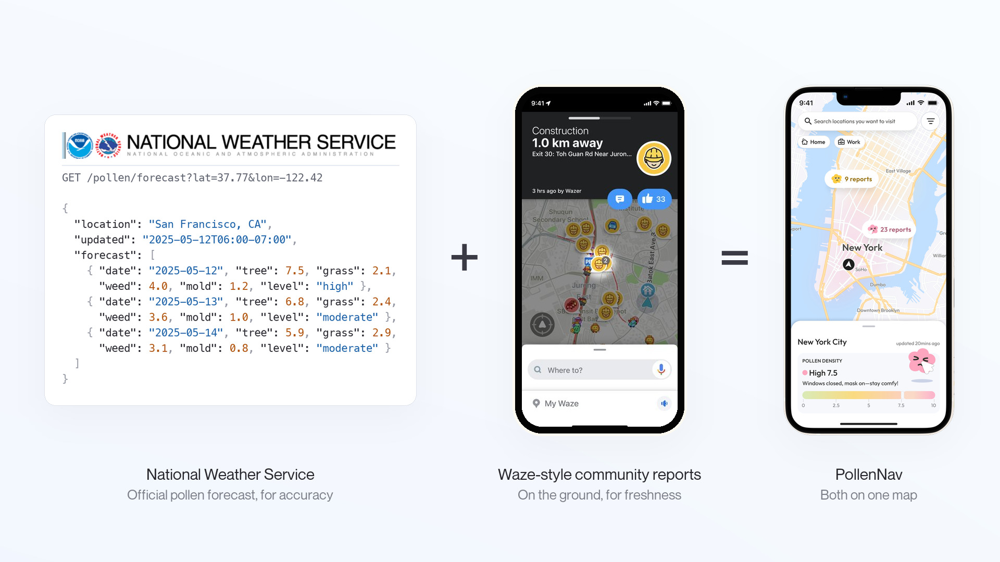
Three challenges shaped the design direction
Data Clash
National Weather Service data and community reports use different scales and formats, making it difficult to merge them into a cohesive picture.
Cognitive Overload
Pollen data is inherently complex. Showing type, severity, timing, and location without overwhelming users required careful information hierarchy.
Brand Empathy Gap
Health apps often feel clinical. We needed a visual identity that felt warm and supportive while maintaining trust and clarity.
Exploration
Making invisible allergens readable at any zoom
Visualizing invisible allergens on a map without overwhelming users was the core challenge. I explored multiple approaches to balance information density with visual clarity.
Version 1
Single color with varying transparency. Density differences were hard to see.
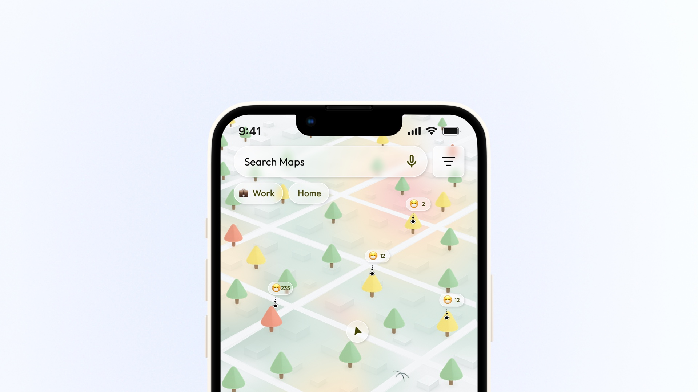
Version 2
3D white map with color-coded trees. Too much engineering effort to build.
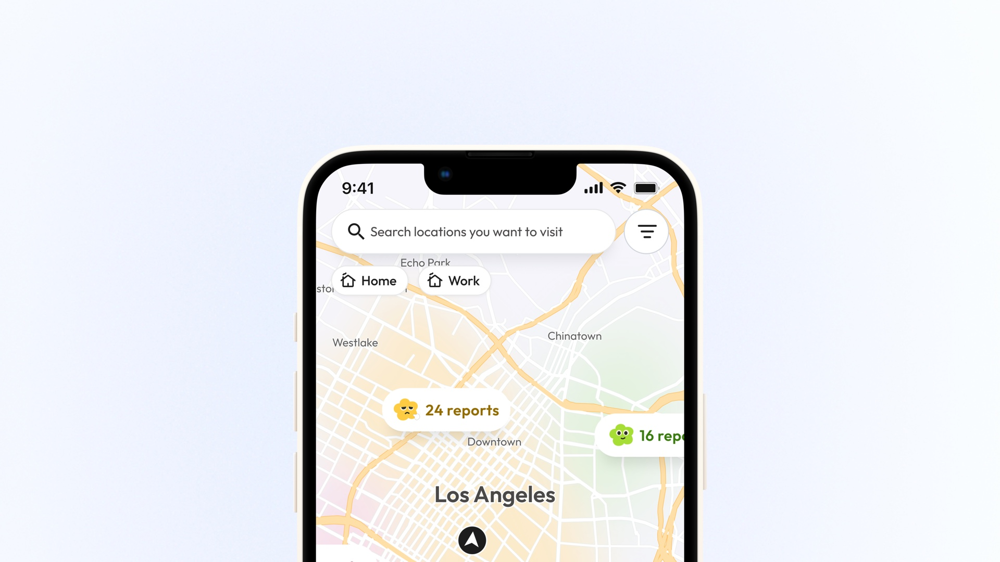
Final
2D white map with colored fog. Clear at any zoom, easy to build.
Enough pollen detail to act on, without the overload
Users need to stay informed without cognitive overload. I iterated on how to structure and present pollen type, severity, and timing clearly.
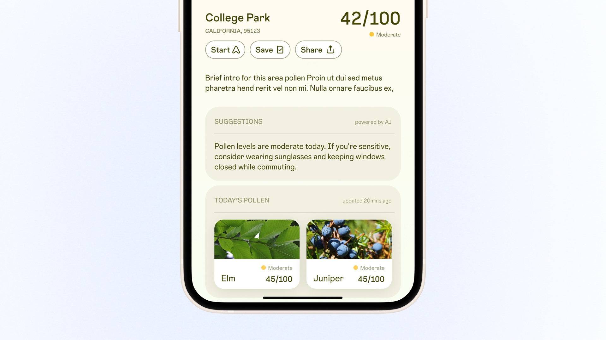
Version 1
Text-heavy cards. Detailed but hard to scan.
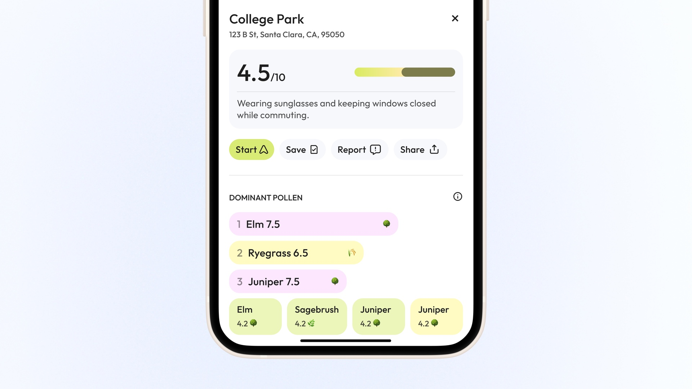
Version 2
Color-coded with density bars. Still felt analytical, missed emotional cues.
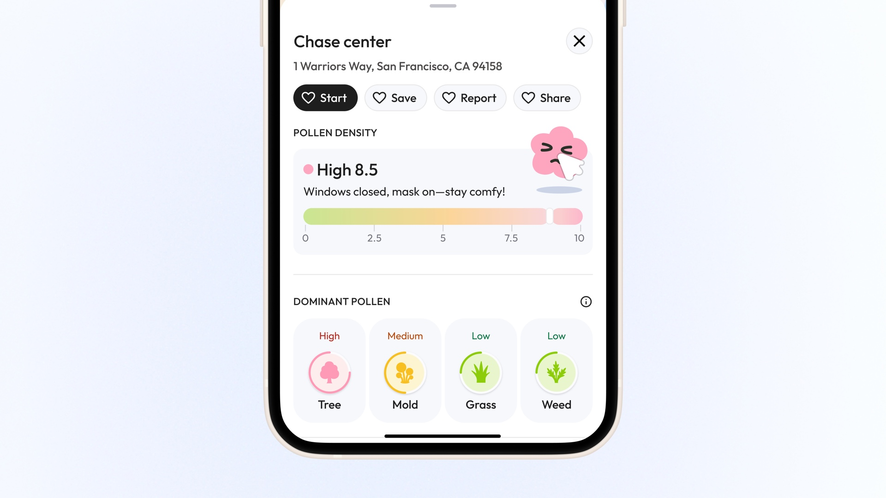
Final
Map-aligned colors with expressive icons. Instant sense of pollen risk.
Exploration
Approachable, not clinical
We wanted PollenNav to feel approachable, not clinical. I explored different character styles to ensure users feel supported while maintaining a clear, simple design language.
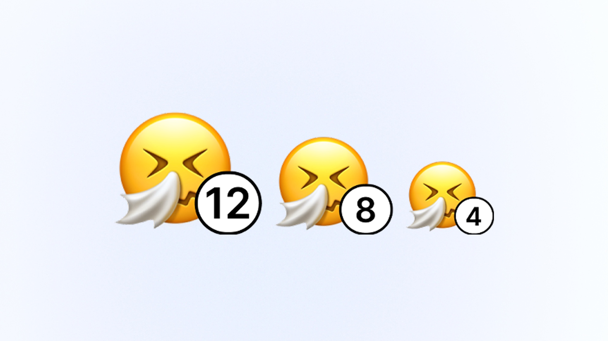
Version 1
Emojis. Quick to read but lacked personality.
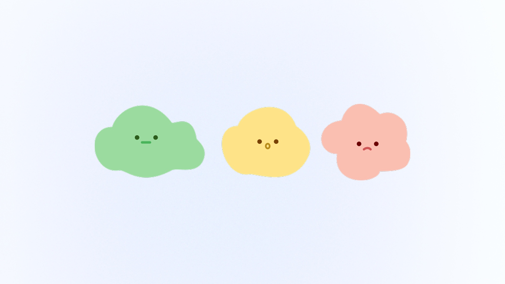
Version 2
Cloud characters. Unclear faces reduced emotional impact.
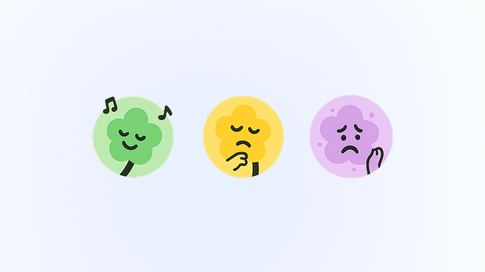
Version 3
Flower characters. Colors lacked brand recognition.
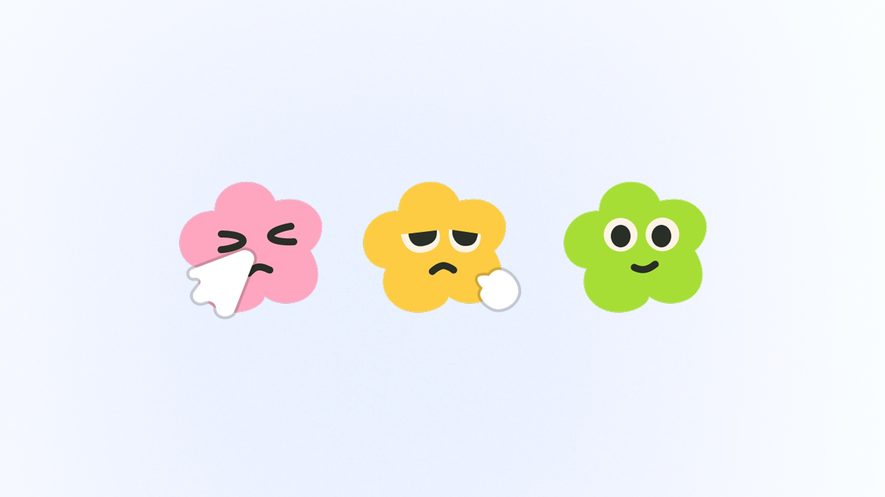
Final
Refined flowers. Cute, warm, consistent across touchpoints.
Usability Testing
Validating the experience with real users
Rounds of usability tests
Users interviewed
Increase in completion rate
After the initial design, we conducted 3 rounds of usability testing and interviewed 12 users, resulting in a 34% increase in the completion rate.
Final Design
Maya's day starts with onboarding that builds trust
Before opening the map, Maya is introduced to pollen tracking, community reports, and personalized allergens.

She scans the city, then zooms into her block
Fog overlays and report bubbles at city scale, with street-level detail on zoom.

She tracks her allergens and schedules outings when levels dip
Hourly and weekly forecasts with personalized suggestions for low-pollen windows.

A quick glance at the mood meter tells her to head out or stay in
Expressive characters and a color-coded bar let users sense pollen risk at a glance.

She picks a low-pollen route and detours around hotspots
Low-pollen route alternatives with real-time alerts for hotspots ahead.

Her watch shows live counts, reroutes instantly, and logs sneezes with one tap
Apple Watch companion for live pollen counts, rerouting, and one-tap symptom logging.

When she flags a pollen zone, the map gets better and she earns relief points
Mood-based reports improve the map for everyone and earn points for allergy relief products.

Now Maya walks freely, guided by verified street-level data
The app turned guesswork into confidence. She checks her block before stepping out, picks low-pollen routes to work, and schedules outdoor time around her allergens.
Reflection
The hard part was not accuracy, it was making invisible data feel tangible
Twenty interviews said the same thing. People did not want another symptom tracker, they wanted to know whether to take this street or the next one. Getting there was never a data problem. The most accurate version we built, color-coded density bars, read as precise and still felt analytical, and people did not act on it. Fog overlays, flower characters, and expressive icons did. What I took from it is that for invisible problems, legibility and feeling are the product, and precision is only the raw material.